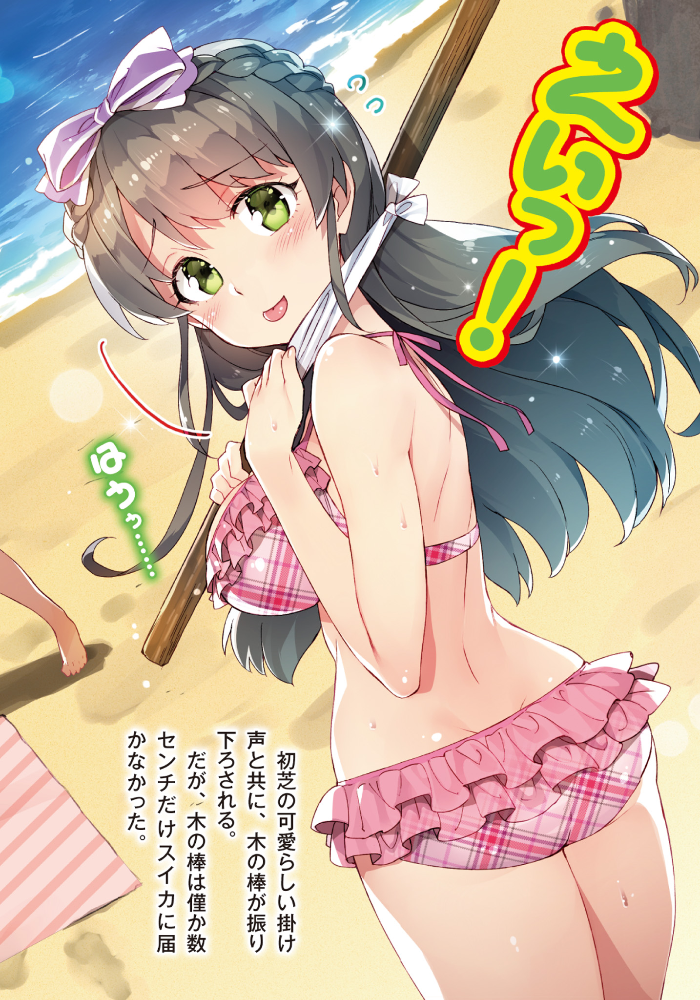
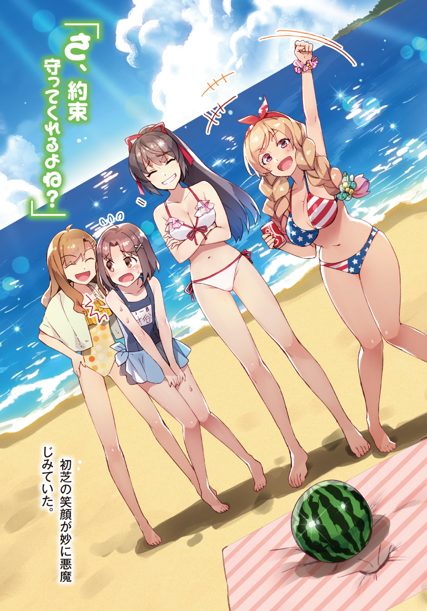
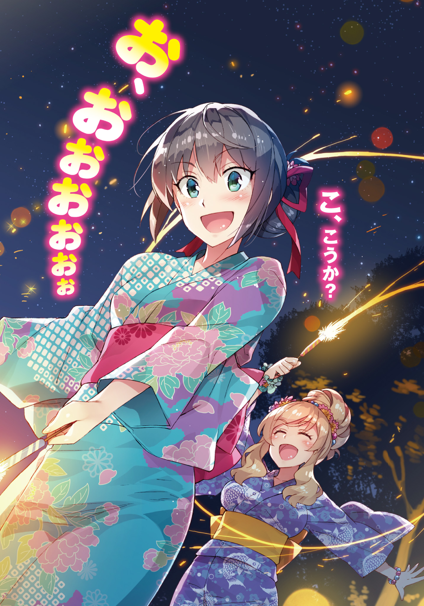
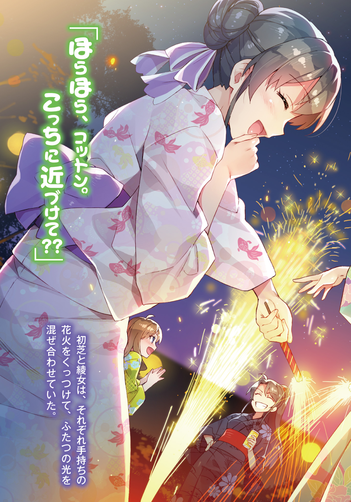
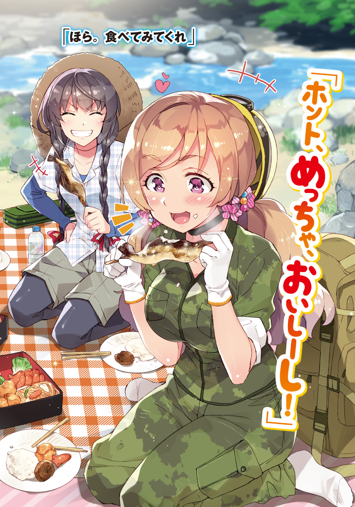
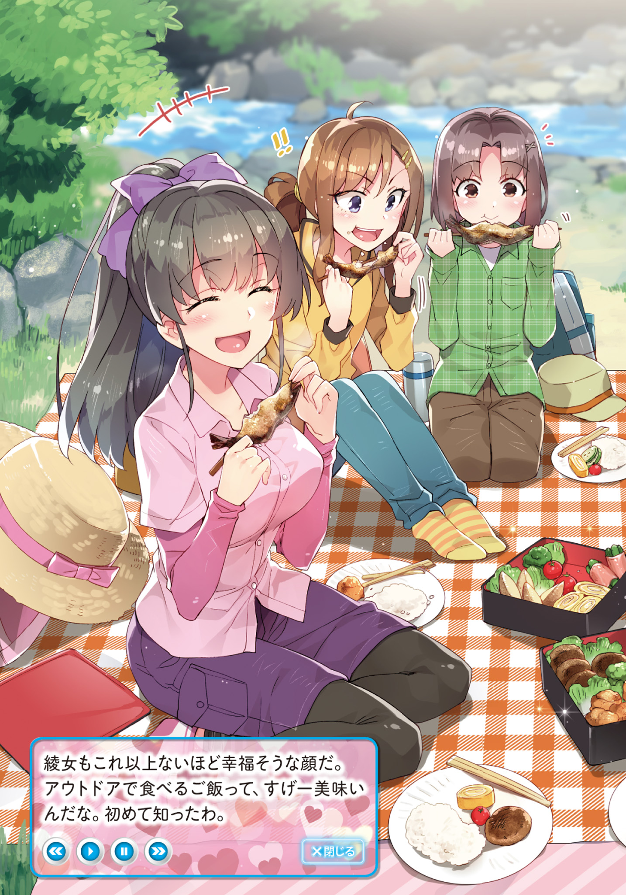

Prologue
(Currently dead) discord server for the series.
TL: ArkTL
Announcement: I've talked with Ark and got his consent to put up his TL for the parts he's worked on here. We'll try to push out chapters together, but are both busy with RL, so updates will be delayed.
Disqus Volume 4 here.
Being urged by the sunlight peeking through the curtains to wake up, my drowsy morning starts in bed.
The first day of summer and there’s already a small yet continuous sound.
It’s a sound that I’m now used to hearing.
Should be the sound of mom getting up, and/or doing the chores.
Even though I know she wakes up early to prepare for me and I feel some sort of guilt, I still cannot defy the temptations of the sleeping devil. Whilst listening to the sounds of the chores and trying to feel asleep–
I noticed something.
It feels different from usual.
The movements should be more smooth, and you should hear some mechanical sounds. Yet, today sounds like an elegant beat.
–Wait, no.
Didn’t mum and dad go on a trip long ago? Dad got his summer holidays.
Turning to look at the clock, it’s 7 at the morning.
They said they will be taking the first train, so they should be out already.
Yesterday was the day before the trip, mum and Kiriko-nee drank until night,
Did they perhaps overslept?
No, if they overslept, they would have left in a rush, but there was no sound.
“It’s not a thief… right?”
There is only Kiriko-nee and Kiyomi in the house right now.
And Kiyomi would never wake up to do her chores.
And regarding Kiriko-nee, looking back at yesterday, she should sleep until very late.
I crawled up and went down the stairs.
They seem to be cleaning the bathroom now.
When I was ready to peek through the door– The door suddenly opened.
“Uwaa!”
“Eh… Eh!!! A…A…Ayame!?”
It was Ayame behind the door.
She was holding a basket full of clothes.
The basket of clothes were also already dry.
…Strange? What is happening?
Is it because I woke up too early? Am I dreaming?
“M…Morning, Ayame. Say, what are you doing here?”
“Morns, I’m washing the clothes.”
“No, I know that but, why here?”
“I was told to.”
“Told to?”
“By Seiichi’s mother. She said because she’s going on a trip, so the chores will be left to me.”
Ehhhhhhhhhhhhhhhhhhhhh
The f*ck is wrong with my mother. Being retarded must have a limit right. She made others do the chores! What's more, she asked my classmate! To do our chores! Is this even normal!?
“Say Ayame, why did you even accept this request.”
“No… it's more like I can’t refuse Auntie’s request…”
Ayame shivered shyly.
Wait, since when did Ayame become so familiar with my mother.
“A…And, helping to do the chores, has a feeling of being like a wife.”
Looks like she got affected by eroges again.
Well, I can’t blame her… After all it’s my fault.
“I… I will go back when I finish, after all I still need to complete my homework. Ah also you don’t have to worry about breakfast.
You, Kiyomi and Kiriko-sensei’s, in total 3 portions right?”
“Tha… That’s not wrong…”
Then again, if we let Kiyomi handle it it will be a disaster.
And Kiriko-nee’s cooking is also dangerous.
My cooking isn’t the best, but it’s not like I can’t cook.
I just can’t do flavours.
“…Please make 4 portions”
“Eh? And whose?”
“Isn’t the fourth person right here?”
I stared at Ayame.
“You totally forgot about yourself.”
“Eh? M…Me!? C…Can I?”
“That's how it should be, right?”
Speaking of which, thanking people for cooking for one’s family, saying “thanks” is the proper thing to do.
“And… If it’s just drying the clothes you can leave it to me. I’ll leave breakfast to you.”
“It’s alright, it's still early in the morning, so we can do it together ❤️”
Eh, it’s fine.
Walking up to the balcony at the second floor, we hung up our clothes together.
“D… Doesn’t this feel like we are newlyweds?”
She says with an excited face and such puppy eyes. Speaking voice lines of eroges again.
“Who knows.”
I responded coldly.
But hanging up clothes like this, maybe to others it does feel like we are newlyweds…
Chapter 1: Isn’t there too much homework?
Disqus Volume 4 here.
Part 1
This part was translated by ArkTL
There’s a pile of books on the desk.
Japanese, Maths, Modern Society e.t.c. , textbooks and notes, shining because of the morning light yet in this irregular atmosphere.
Those are all the summer homework we have to do.
“…, Looking at this, isn’t there too much homework.”
Japanese is to write kanji and do a reading reflection and some questions.
Math you have to do two full books of exercises, with 15 pages each.
English, you have one book with 20 pages.
Chemistry is a question book,
Physics is also a question book.
Modern Society you have to write an essay about either politics or war.
History you have a question book.
The elective Music is that you have to perform the specified song once the semester starts.
ICT( Information and communications technology), is to write an essay about patents or something about IT.
World History is just a book report.
“My school work before is 1.5 times of yours though.”
Kiriko-nee who stayed here last night, whilst grabbing one of the question books muttered.
“Why did you come in my room.”
“It’s because I saw you looking at your desk with no energy, it makes me want to say what are you doing~”
Sigh, Kiriko-nee will barge in without knocking anyways so it’s not that it matters.
“1.5 times huh… Kiriko-nee’s school is a through-train?”
Ark: In case you don't know what is through-train , its like you can study at the same school as your middle school in high school; in ASIA
“It’s not though. And some of my college peeps have 3 times the amount of yours.”
3 times… I can’t believe such a scary school exists.
Don’t tell me, our school already has little homework!
Whilst looking at the mountain of homework, I opened the English exercise book.
“Ohiro-sensei looks so kind normally, who would have though his homework was this thick… And the words, so small and scrambled…”
My eyes hurt. If it’s like this I wouldn’t mind more pages but… I just hoped the words could be larger.
“Probably it’s because he is gentle he put so much work up. He hopes you to learn much after all. And when you’re in a foreign country, if you can use English fluently, you could get a job easily.”
“So it’s like that… I guess you could have this mindset.”
Like if you learn the basics of English when you’re in high school.
In the future, when eroges become a worldwide thing, you can live off this industry, or at least become one of the options.
Also apparently if you learn English, it would also be easier to learn other languages.
…No, if you think carefully. Outside, especially America, don’t they have a high restriction on 18 plus games? It seems like a hard thing to import them to North America.
High school students like us, just one little mistake and it’s going to be labeled as child p*rn.
“An English job eh…”
“It also benefits you when you’re traveling, after all English is used in many countries.”
“Putting this aside Kiriko-nee.”
“What?”
“You smell of wine…”
It’s not a rare thing for Kiriko-nee to be at home, she comes here to eat all the time. But yesterday she just drank with mum and dad like crazy. They waited until we were asleep and quietly drank until sunrise.
But they still can go on a trip huh, just how strong are they…
“Don’t give me this bullsh*t. I’m on holiday, just still have work that is.”
Even when Kiriko-nee ate Ayame’s special breakfast, she still looks soulless.
Then she wrapped her arms around my neck, I guess she’s still drunk.
“Say, how much did you drink.”
“Beer, sake, shochu, liquor… So much. I can’t even remember.”
“For real, this is hindering the education of young people.”
Wine, this stuff even if you smell it nearby. You already know ‘Ah, I can’t drink this’.
If we wait until the legal age, will our minds change?
Although you say this, but our house is basically full of secret stashes of wine.
“You… Come on, make it quicker so you can drink wine. Even though you broke the rules of 18+ games, but you say you can’t break the rule of drinking.”
“A teacher is encouraging a minor to drink…”
“I did not encourage you, are your ears donkey ears.”
“Don’t understand, are you still drunk?”
“I won’t be drunk only on this level, but to say my head hurts a little.”
“You’re just not awake, you’re annoying so get your ass off to the living room.”
I shoved off Kiriko-nee’s arms.
“Wah~ So cold. La~Lazy… I want to drink water.”
After Kiriko-nee went out, I once again looked on the desk.
The astonishing amount of workbooks and worksheets, it’s just like mount Himalayas.
I need to finish this pile of homework within three days… If I can two days will be of the best.
It’s already summer holiday, yet to speak it’s almost the end if the holiday.
It’s the last day of this summer holiday… not.
It’s the first day of the holiday and it’s 9 in the morning, I only woke up a bit late compared to usual.
And from this morning the sunshine was so bright that the room feels like a desert, let’s just turn on the A.C. to lower the temperature.
This is also something to soothe my feelings for this pile of work.
If I plan to do my homework a little day by day, it wouldn’t take up so much time.
You just have to replace the time of lazing around to finish your work and that’s it.
But, I have a reason on why I must finish my homework early.
When I tightened my resolve in front of my work, I can hear the phone ringing.
“Tozaki?”
My smartphone showed the name of my fellow eroge enthusiast: ‘Keita Tozaki’.
“Yo. What's up? Calling me this early.”
[Eh, you’re already starting your homework already?]
“I’m just starting now. The temperature didn’t go down yet.”
[Say, isn’t there too much work?]
“I feel you.”
[Then, let’s negotiate.]
Now, as if we’re discussing something bad, Tozaki changed into a tone as if he’s bribing a guard.
[Wanna divide our work, like last year?]
I cut the call…
On paper, it of course sounds like a good deal, I also think so myself but… Even I have that student pride… not…
Well…
“I modeled the plan yesterday, so let’s get this sh*t done asap.”
If it’s for “Destiny Rider: Zero”, I can easily do this!
And yes… My reason to complete the pile of homework is of course, the new eroge…
Part 2
TL: Potla (Rest of the chapter is TL'ed by me)
Honestly speaking, book reports often turn into just a plain summary. While such a form is efficient for earning good grades, the disadvantage is that you have to read the entire work to be able to write a good summary.
Frankly, I don't have time for that, and neither do I need to. I'd prefer writing my impressions about the work, meaning that there's a lot of freedom in the choice of the writing style. There's no rule saying that one needs to read the entire book to write a report on it.
You can read the prologue, imagine how the story proceeds after that, and submit a writeup on it. Even that works as a proper book report.
Potla: Does it, though? lol
For example, say a story starts with "The scenery of a snow country unfolded as soon as we got out of the tunnel...". But I've personally never visited a snow country. How does it even feel to walk on snow? Is it similar to walking on top of sand? If I get the chance, I'd definitely want to visit such a country. However, I'm a little bad with the cold, so I must research on warm clothes resistant to the cold and snow.
My book reports are always like this. But even that is a viable "report" on a "book". While the teachers might not like it and frown upon it.
Potla: The Japanese for "book report" is literally 読書感想⽂, which means "reading impression text". So Seiichi is basically playing around with the meaning of the kanji.
"Aight, that ends the Japanese language book report assignment. This is a good pace. I've already completed all the workbooks and printouts, so what's remaining is the History book report, and that IT-related essay. There's also that assignment for playing the score for the recorder. But if I do it now, I'll probably forget by the time the terms starts. It's better to do it the day before the music class after the term starts..."
Tomorrow is the day 『Destiny: Zero』 gets released.
Potla: Clearly a parody of Fate: Zero, if you're still wondering.
Pulling an almost all-nighter to work on the homework was definitely a worthwhile endeavor.
"It's good that I don't have to be sleepless when I line up to buy the game at dawn tomorrow."
Potla: wtf, that's some real dedication.
I'm sleepy right now, but will probably be able to sleep at 8 pm or something tonight.
In other words, I can engross myself in playing with my best physical condition.
I'm unstoppable now. Hahaha, I feel like I rule the universe right now!
As I was feeling high from sleeplessness while taking a short break, my phone snapped me out of the euphoria by shouting its ringtone.
"Who dares bring me out of my own world... wait, it's Ayame."
The name on the screen was my classmate, Ayame Kotoko.
As soon as I tap on the receive button--.
"Aramiya! Please save me!"
Her desperate scream traversed from my right ear all the way to my left.
I had reflexively pulled the phone away from my ear as the volume was loud enough to tear my membrane.
But listening to her urgent plea, I put the phone back on my ear.
"What happened!? Are you in danger?"
"Literally, so. I'm blocked from all sides, and have no route of escape!"
"Calm down. Did you get into some sort of trouble again? In that case, you should first get in touch with the police---"
"Ah, no. It's nothing of that sort."
"Do not hit whoever is cornering you. That'll lead to a disadvantage...... Wait, what do you mean by nothing of that sort?"
"Y-yeah. I'm not in an accident or assault or anything."
Is that so. I had assumed she got herself wrapped up into some such accident again.
"If you're not in trouble, don't call with such an urgent tone!"
"It is an extreme urgency though!"
"Meh, I get it. What happened? Anyway for now, take some deep breaths and talk about what's up."
"Exhale〜〜〜〜〜〜〜〜〜〜〜〜〜〜〜〜〜…… Inhale〜〜〜〜〜〜〜〜〜〜〜〜〜〜〜〜〜……"
Ayame started taking deep breaths. It was interesting that she was honestly doing it thorough and thorough.
Immediately after, she asks me for consultation.
"Umm, you see. The homework doesn't seem like it's gonna end."
"Huh?"
"I-I tried my best on my own! I've solved whatever I could solve by myself! B-but, there are so many problems that I don't get how to solve. I don't think I can finish everything by today... or even tomorow..."
"...You don't really have to keep me company though. I'm only working hard to finish the homework so that I can play 『Destiny: Zero』 without anything holding me back. Pretty sure you'll get enough time to finish the homework after finishing the game, anyway."
"Y-you're right about that, but! I have many events during summer too... I also want to complete the homework right now, and then play 『Destiny: Zero』. Together with you..."
"As for me, I don't mind showing you the answers on the last day of vacation though."
"For real!? You're a life-saver... wait, no no!! If I do that I'll definitely lag behind studies in the second term. There's no point in that. I want to do the homework using my own effort as much as I can. B-but, you see... I alone can't do it..."
In other words, she wants me to teach her.
Well, if she can get better at studies during the second term, it'll definitely help combat the bad rumors about her that were going rampant.
Plus, she's this motivated right now. She'll definitely lose interest in studies if I drop water on her at this timing.
I do have leeway, so not like I have to hesitate in teaching her.
"Got it. You can come over to my place."
"I-is it fine?"
"Wasn't that what you wanted to do from the beginning? No need to act so reserved."
"Thanks! I'll go over right now!"
And then she cut the call in a hurry.
"Well then, guess I'll prepare some barley tea..."
Potla: What's there to prepare for serving barley tea lol.
At that moment, my phone started ringing again.
"Who's it this time? Ayame again?"
The intercom rang loudly.
"Y-yo!"
Ayame was waiting as I opened the door.
Her eyes are slanted upwards, and has a twintail hairstyle; the usual appearance.
It's not as much as the time when we went out together last time, but her outfit looked neat and tidy. Complete with a hat, she does look a bit boyish. As it was summer, her clothes had slightly increased exposure, revealing her fair skin quite a bit. Her shirt was on the shorter side, making her belly button almost visible, and due to the short pants, her healthy thighs were also in view.
She was also carrying a huge sports bag over her shoulder.
"You sure have a lot of luggage..."
"The homework given to us is too much. Why is our school so sadistic about it?"
We were talking about that yesterday. Me and Tozaki.
"The amount was about the same last year too, though."
"A-anyway, I didn't submit the homework last year."
Ayame awkwardly averts her eyes and plays dumb. Just as I thought.
You can get promoted to the next class even if you don't submit the homework. However, it'll probably affect the school's internal evaluation.
"Well, whatever. Come on in. I have no intention of wasting time here."
"Roger!"
We climb the stairs and enter my room together.
"Oh, it's a wild Ayamecchi~"
"I-Ibu!?"
Our classmate, Suwama Ibu was already sitting on the table in my room.
Donning a fluffy pair of twintails as usual, she was also wearing candy-shaped hairclips. While her makeup isn't as intense as before, it could be said that it was just the amount to make it look natural.
She was wearing an off-shoulder top that completely showed off her shoulders, which, paired with the miniskirt, made her getup excessively exposing.
Ayame looks at me with a face that clearly asks why?
"This girl is the same as you. She said she doesn't get a thing."
"N-no, but Ibu won't really play Destiny:Zero, right?"
"Well, that's true... But apparently she couldn't solve a single problem, so was quite lost about it. It'll be troublesome if she doesn't submit anything and the teachers turn unwanted attention to our club."
Thanks to the Student council and Kiriko-nee, we somehow were able to avoid the inspection, but the topic of our club did get raised during the teacher's meeting. If we do anything stupid, we'll catch their eyes this time for sure.
On top of that, there are teachers who would disagree with allowing students to play... games in the club. Churning up any kind of trouble can lead to our club getting disbanded. If our grades are bad, then that's exactly what they will hook onto, and say stuff like "Your grades went down because you play games!".
I really want to avoid such worthlessly stupid scenarios.
"Even though I thought it'll only be the two of us..."
Ayame leaks out her thoughts. Hey, I can clearly hear you.
It's not like I'm bullying her or anything.
"Anyway, let's get started already. Let's start with the toughest hurdle first: math."
"Yeay～ I'm counting on you, Seiichi! Let's try our best together, Ayamecchi!"
"Ugh... well, I must finish the homework at all costs. It's time to get serious!"
Both of them are sure motivated.
Well then. I start reading the prologue of the history book for the book review thing.
Just as they start working together on the math workbook,
"By the way, Ibu, how're you so calm?
Do you not even feel the slightest bit nervous when you're here?
I come up to Aramiya's room a lot too, but I'm always nervous about it."
"Uhh, well, I've been here quite a few times, I guess? But if I'm visiting after a long time, it does make me ner～vous--"
"Wha...!"
"I used to come here a lot before sending that love letter--. Together with Akocchi and all. I was pretty surprised that the room changed a lot compared to the last time I visited～. It's a lot more empty now."
Ayame throws a sharp look again. You're scaring me.
"It was against my will. Not like we've done anything anyway."
Kyouya, Izumi, and Ibu were the usual guests.
Well, I was never really in their group, but for some reason they liked coming over to my place. Even then, the total number of times could probably be counted on my two hands.
Thinking back on it now, it might have been something like an evaluation test. "Should we put this guy in our group?" "Let's observe him a bit more." Something like that.
"I'm jealous of you..."
"Ehehe～ Well, you could call it the privilege of a childhood friend, maybe～?"
"Ughhhhhhh"
While our houses are close, she's never come to wake me up in the morning or picking me up on the way to school, y'know.
I don't remember going to school together even once.
In that sense, she's a complete failure of a childhood friend by eroge standards. In the first place, if your childhood friend that you reunite with after years becomes a flashy gal, people will complain about the work. At least 50% of them will.
"B-but, I came to wake you up in the morning! That means we're already childhood friends."
......What's with that logic, Ayame. You don't make sense.
"Ehh～ You met Seiichi for the first time in high school, right Ayamecchi? That's not a childhood friend anymore..."
"You could just call us childhood friends that didn't know each other till recently!"
"But, neither of you are children anymore～"
"No! If you think you're a childhood friend, you're one!"
The discussion takes a philosophical turn. Seems like they're fighting over nomenclature of the term "childhood friend" itself.
"Well, the definition of childhood friend is a mystery. Even if you know each other from high school, when you turn into adults you could call each other childhood friends."
Ayame immediately approves of my opinion and nods enthusiastically.
"Exactly!"
"...While it's fine to pursue the mystery of childhood friends, can you guys first solve the problem of summer vacation homework?"
The two of them return their attention to their notebooks immediately.
What am I gonna do with these two...
Soon after--
"By the way, what're you reading, Aramiya?"
Ayame asks with a voice full of curiosity. I really wish you could concentrate for at least 30 minutes though.
"The history book. We have homework on it, remember?"
"If I remember correctly, it's the book review, right? For world history... 『German Bismark Empire』? You're sure reading some strange book for it."
"It's not strange. I'm not interested in the content that much either. It's just for the sake of writing a report."
Ibu's face turns into a pout hearing my words.
"Both world and Japanese history are so annoying―. What'll you do learning about the old times? It's so useless. I'm never gonna take history research as a future job, y'know～"
"Yeah..."
Ayame agrees with Ibu's words wholeheartedly.
Man, history is interesting though.
There's even an expression called "history girl". Well, although the term refers to girls that are familiar with a particular time period, or seem to have inclination towards knowledge about some specific people.
Most importantly, in VNs that use historical events as their base tend to have an interesting gap between the real person and the way they're depicted as characters. Like, isn't it amazing when a genius tactician yells "The enemy is here!"? That kind of line is cheating. I mean, no matter what they do it's so cute you could die. There are even instances of loose settings, such as characters yelling "Here we go! Yeah!" in English during the Sengoku era. That one really caught me off-guard.
Even though the content itself follows historical events, if they execute it properly people will be unhappy about it, and if they show the story from a new perspective, it might take people by surprise.
And that's exactly why I wish to learn about the Sengoku period or the Sangokushi period, which appears frequently as the setting of several games. Even if it's completely useless for my coursework in school! As for the Sangokushi era, it's enough if the battle of Sekiheki is mentioned, and even in the Sengoku era, there's not much other than the famous battle of Sekigahara. The battle of Okehazama doesn't even appear in some games. Well, the Sangokushi and Sengoku period's common sense can be overturned at any time by a single primary source, and it's a mystery about why it's important.
Potla: A bit shaky on my interpretation of the above battles. I don't know anything about Japanese history, after all... But if you're more familiar with the english version, Sengoku period is called the "warring states period" and Sangokushi era is the "three kingdoms period", so if you wanna look into it in more detail, feel free to look these up.
"Didn't you learn about the reason for learning history in primary school? It's to learn from your past and use the knowledge in the present world. Because we have a past is why we can fix our old mistakes. The way you guys are dismissing history as unneeded is itself a recipe for repeating your past errors, you know."
"C'mon, we're not gonna make any mistakes anyway～"
"...You sure sound very confident."
While it's a pain to explain it properly, I think I should fix that misconception of hers. It might help her understand the lessons in the next term better.
...Although it'll sound like preaching, and I don't feel good acting like an instructor.
"Then, listen closely, Ibu. If Ako asks you to send out a fake love letter to deceive someone again, like she did during primary school, would you do it again?"
"Eh? Of course not. It's not good to deceive others. ...Seiichi, don't tell me you want to be deceived?"
"Like hell I want that! Just as you said, it's bad to deceive others. Okay, so why did you understand that it's not a good thing?"
"Well, that's because Seiichi and Ayamecchi got mad at me..."
"That exactly is history. Your personal history. Although its scale is tiny, because you have that kind of experience, you know it's bad to send out fake love letters, and won't do that anymore."
"Ah, I see..."
It feels kinda strange to see her being convinced about such an obvious thing.
I guess this lack of common sense is what makes her character. I should make some effort to correct that personality.
"Say if you had read in some book that it's not good to deceive people or that you shouldn't trust what everyone says without questioning it before you were asked to send that love letter, you wouldn't have taken the same action back then, right?"
"Yep yep!"
"History is exactly that, a compilation of human experiences, and its purpose is to make sure people don't repeat the same mistakes. Because we understand our old mistakes, society can keep functioning as it does right now."
"Gotcha!"
...Well, her replies are enthusiastic. But did she really get all that?
Whatever. I'll just believe in her for now.
I close my book and point at the cover.
"Bismark, the person who this book is based on, also said 'Only a fool learns from his own mistakes. The wise man learns from the mistakes of others.'"
"History is amaazingー!"
While Ibu was impressed by my speech, Ayame squinted her eyebrows.
"Say, isn't history just the compilation of how others failed? Unless you fail yourself and run into trouble, people don't really learn to not make those mistakes, right?"
"Quite sharp. I think what you're saying is absolutely correct. Apparently the words Bismark said back then were different from what we learn right now. After all, we humans repeat our old mistakes time and again, and try to get around them to overcome hurdles. It's the same for games. Learning from the design flaws, they make the system even better and better."
"Hmm..."
"Well, if people don't really learn from their old mistakes, then they're beyond saving."
"Yeah..."
"...That's why, stop making small talk and do your homework."
""Okay...""
It seems like I made a huge digression while trying to make that single point.
"Aramiya, could you help with this problem..."
"That one... Look up Page 26 in the textbook, and think about it. If you still don't get it, ask me again."
"Okay, thanks."
While asking me questions, the two proceed clearing away their printouts steadily.
The completed work started creating heaps on the table.
"All rightey! I'm done!"
Ibu, finishing her homework, put her mechanical pencil on the table and rejoiced.
Her smile seems to say that she's satisfied with completing it. However, it's only her math homework that got finished.
"I'm tired～ nudge nudge"
Feeling liberated from completing one of her homework assignments, Ibu sticks her head onto my side and rolls it like a drill.
"Praise me, praise me～"
"You only finished a small part of what you have to do. Don't act spoiled. You have a long road in front of you. In VN terms, you only finished playing through the prologue."
"Mph! You keep saying things I can't make sense of～! Isn't it fine to just give me some headpats～. So, pet me, pet me～!"
"You're being super annoying! Are you a cat or what?!"
Since she was being troublesome, I lightly patted her head.
As if pleased by it, Ibu rolled herself back to her original position.
"Ehehe～"
"Goodness gracious..."
I take back my words, she's not a cat. More like, she's a dog.
"..."
I thought that finally the annoying event was over, but now Ayame was glaring daggers at Ibu.
But immediately she returned her sight back to the notebook and started solving the problems at a furious pace.
"I'm done!"
Then, Ayame turned her eyes towards me, as if expecting something.
What does she want from me?
After a while, she inclined her head to the side in puzzlement about something.
And then, she reservedly brought her head closer.
"...Why even you!"
"N-no! It's unfair if it's only Suwama!"
"It's only fair! It's my reward for finishing early～"
"I see, is that the rule! Understood!"
"There's no such rule! You don't understand!"
But both of them ignored my words.
Ayame and Ibu both immediately returned to their problem sets.
Well, if this makes them finish their homework faster, there's nothing to lose... however, I really don't know how I should feel about it.
It's embarrassing to think that petting is a reward, or even a rewarding endeavor to begin with. Am I just being stubborn?
Anyway, I'm not a good mentor, so I hope these guys finish their homework soon, so that I can be free.
"What, you're still on your third page, Suwama? I'm already on my fifth."
"Grr... I-I'm only doing it carefully!"
They sure are going at each other's throats. The rivalry is clear.
I wish they showed a bit of that motivation in school. It's definitely more efficient that way.
"Seiichi! How do I solve this part!?"
"Let's see. Hmm, for that one..."
"F-fast! If you don't speed up, Ayamecchi will--!"
"I'm starting on my sixth page already. You're so slow, Suwama!"
It seems Ayame is fully in high spirits. Although what she's being worked up about is homework.
"Ah, Ibu. For this one, you use this formula like this."
"Oh, gotcha!"
Seemingly having found the trick to solve the problem, Ibu returns her gaze back to the workbook.
Although a bit dumb, she's quite serious and doesn't ask for the answer. Well, it'd be bad if she didn't show at least that much effort.
And then, Ayame asked for my help.
"I should be able to get it if I just think a little bit more about it, but..."
Yeah, it's hard to ask someone else about something which you would be able to figure out in just a bit more time.
It's human nature to try and solve problems on their own. Even more so if it's a problem which they think they can solve with just a little bit more effort.
But, if you misjudge that border of when to ask others for help...
"Finished my 12th page～!"
All of a sudden, Ibu had overtaken Ayame.
"Ehehe～ I finished the problem set! Seichi! Pet me, pet me!"
"Didn't I tell you earlier to not lean your body towards me!"
She came so close that her hair's fragrance tickled my nose.
The room was already feeling hotter than usual because there are more people.
But I don't want to decrease the AC's temperature any further. It'll get too cold. Why does the AC make it too cold or too hot if you just change the temperature setting by one degree?
"Grr..."
Ayame is frowning, a stark contrast with Ibu's happy mood.
Her expression is easy to read... You know your goal today is to finish the homework, and not me, right? And you want to finish it all ASAP.

"Dammit, I just finished too. Next one!"
"I'm already done with 2 pages of the next worksheet～"
As if she's an expert at it already, Ibu further agitates Ayame.
Just like that, both of them focus on the last math homework set.
"I won't lose!"
"Neither will I～!"
Only if they did all this competition without involving me in it...
Well, they'll probably take a break soon, so guess I'll go prepare some tea for the guests.
""It's done-!""
After finishing their math homework at about the same time, the two were sprawled out on the floor together. Although Ibu was moving forward at a breakneck pace, Ayame caught up with her with her tremendous concentration. As expected, she could not overtake Ibu, but even just finishing together was amazing.
Both of them sprawled out on the floor, completely beaten. Well, they did finish two entire workbooks and 15 pages of printout worksheets in less than an hour.
I also put in a lot of effort, but took around two hours to finish all that. Well, whether their answers are correct or not is something only god will know.
"Well, for now, good work."
I put on the table a tray with vanilla ice cream and a lactic acid drink that I had gone downstairs to get earlier.
"Ah, please don't mind me."
"Is it fine, Seiichi?"
"I brought it up for you two to have. Don't turn my labour meaningless."
"Thank you～"
"Then, I-I'll have some..."
Ibu and Ayame, with their happy-go-lucky and nervous attitudes, scooped up a bit it ice cream with their spoons.
Most probably Kiriko-neesan had bought those to have after bathing... but well, there was no name written on the food.
In our house, the rule is that anything that doesn't have a name on it is common property, and we can't complain about who eats it. I checked the back too, just to be sure, but there was no name on it. I've had a bad experience before with eating a treasured ice cream that had a certain someone's name on the back...
"Uuu, it makes my overworked brain feel so much more relaxed."
"Why is it so delicious to have sugar after studying? It's so healing."
"There are few ways to relieve stress as easily and quickly as eating. It's no wonder people eat like a fiend after a stressful workout."
Well, I don't care about any of that. Ice cream is delicious.
All I have left for my homework is an essay on information technology, and it'll be done before dinner. I'm gonna have it eay.
During such a leisurely break time---.
"Ayame-san and Ibu-san are here!?"
The noisy guy has arrived.
The number one person that I didn't wish showed up at this timing.
"Hallo hallo, Kiyomi～n!"
"Yo, Kiyomi. You look quite energetic."
"Of course! Although I'd have been more energetic if Mr. Virgin wasn't here."
After smiling at Ayame and Ibu, she gave me a scornful look. What a jerk...
"We're studying here. If you came here to play, go out."
"All I see is you gobbling ice!"
"We're taking a break. Your timing is bad."
Why is it that others that come to check on you studying (especially parents) only drop by when you're taking a break?
"Tch."
Clicking her tongue like that, Kiyomi leaves the room.
Mhm, that felt good.
"I'm back!"
...Or so I thought. She's back.
Holding a tray with three servings of mizu-youkan on it.
TL Note: soft adzuki-bean jelly.
"Ayame-san, Ibucchi! It's not much, but please help yourselves."
"Is that fine? No, I already had ice cream though."
"Don't mind, Ayame-san! I bought this after getting your message from earlier! The one you said is delicious!"
"Message?"
"Yes. It is members-only... But you can enter immediately if you are introduced by someone you know. We have a very large group chat where we exchange information on sweets on a daily basis."
While she was talking so proudly about it, I reached out to grab a plate. But she immediately noticed it and pulled the tray away.
"There's no mizu-youkan for you!"
Knew it.
Dammit, this is why I wanted to snatch it away before she had noticed.
"Rather, having so much sugar will slow your brain, so I'll pass."
"This much is fine for girls～. Ice cream and mizu-youkan both will fit snugly in our extra stomach. The nutrition from there goes to another place anyway～"
"Where the heck does it go?"
I've never heard of such a stupid story before. Is she just acting like she knows it all, or is she being deceived by the Internet? Where she picks all this up is a real mystery...
Kiyomi handed out mizu-youkan to the two of them, and sat down with hers as if it's the most natural thing to do. Right opposite my seat.
"Rather, why are you doing homework right at the beginning of summer vacations?"
"Not like you got anything to do with it. Look, if I don't finish my homework, it'd keep nagging me at the back of my mind while playing games. Plus, the latter half of the vacation is full of work to do. This year, at least."
"Ah, that's right, you're going on a trip."
"Why do you speak as if it's someone else's problem? You're coming with too, remember?"
"You mean I've gotta put up with you Virigin during the trip?"
"No, well. I don't mind staying behind though."
Well, it was all proposed by Hatsushiba in the first place.
I thought it'd be good if they just made it into a girls-only trip.
"It's already decided, so it's not good if you don't come."
"That's right, Kiyomin. Both brother and sister need to come, you know～"
When I casually tried to evade going with them, Ayame and Ibu blocked my escape route.
Hearing that, Kiyomi gave me a disapproving look. I mean, of course.
"Well, I don't know what to say to Hatsushiba if I cancelled right now."
I was the one who came up with the idea of a reward for Ayame and Ibu, so there's no way out of this.
Besides, the excursion will be treated as a club activity. Even though Saitani will join as a guest.
"What about your homework, Kiyomi? You first years also have it, right?"
Hearing Ayame's question, Kiyomi made a smug face.
"Ahaha, I ended all that long ago!"
"Eh?"
"I finished it on the day of the term closing ceremony. Because I want to play around all summer vacation."
"Are you serious..."
Then why don't you go play around somewhere already.
Why is she at home... Just go play till you can't move anymore. Are you just satisfied with buying some mizu-youkan?
"Then, go outside to play."
"Already done with playing outside for today. I came back home cause the store was closing."
She could've just come back home later at night, but cut it short and came back in the middle of the day.
"Rather, let's restart our homework. Kiyomi, you're in the way so get out."
"It doesn't matter if I stay, right? I'm interested in what you guys have for homework in the second year."
She seemed to pay me no heed as she started flipping through our homework.
"Oh, looks quite easy."
Hearing that, Ayame and Ibu got shocked.
"Y-you understand it?"
Ayame asked in confusion, to which Kiyomi nodded smugly.
"Yep! I have the impression that it is an extension of the first year. I can probably solve the stuff here by applying what we learned in the first semester."
Ayame shakily answered "O-Oh."
While observing their interaction, Ibu tapped on my shoulders. "Say, Seiichi. Is Kiyomin super smart?"
"Originally she should've been able to get into a much better school."
However, not sure why, but giving the excuse of it being close, she enrolled into Mikage High School.
It was quite odd of her. Even though I, the object of her hate, is in the same school.
"Ayame-san, Ibucchi. Should I help you? I think I can solve the problems."
Although Kiyomi said that with good intention, Ayame shook her head.
"Nah, it's meaningless if you don't do this kind of thing by yourself."
Ibu also agreed.
"Yeah～ It's not good to just have someone else help you."
Kiyomi clasped her hands together, ecstatic about something.
"As expected! Both of you are really giving your all!"
It was an obvious thing though, are her eyes rotten or something?
"And in contrast, when you look at Mr. Virgin..."
"I finished all my homework by myself, you know?"
"Of course, why are you saying the obvious?"
...I want to punch her. What's with that double standards? Doesn't she feel any contradiction in her words?
"We've rested long enough. Let's restart."
"Aight. Gotcha." "Yep～"
"Please do your best!"
She isn't leaving though.
I wish she went back to her own room. I can't calm down with my sister around.
Three hours later--.
"I can't anymore～..."
"My brain won't work anymore. At my limit..."
Ibu and Ayame both flatten on the table.
Apparently they burned out after working hard for so long.
Kiyomi was warmly watching over them while fanning them to cool them off.
"Thank you for your hard work～"
However, the two only thanked Kiyomi and didn't try to get up.
Studying is stressful. While it can be fun to learn about something new, it can come back to get you in the form of excessive fatigue.
They say exams are a fight against this fatigue. Or rather, hitting into the thing before the fatigue gets you. In order to fly, you gotta raise your left leg, but while raising, you also need to bring up your right leg, and then in the meantime, your left leg... it's this kind of recklessness.
However, the homework isn't over yet.
"Ibu is well, okay I guess... But Ayame, are you okay like this? 『Destiny Zero』 will not wait for you at this rate."
Hearing that, Ayame's fingers twitched on the floor. It was the sign of a zombie waking up.
However, her body didn't get up, and that was the only reaction to my words.
She seems to think that this is the end of the line for her.
"I... really want to end it all... but any more than this..."
Sad tearful words come out of Ayame's mouth.
If she wants to quit now, it doesn't really matter to me at all. But since I started looking after them, I feel obligated to see it to the end.
"Well, you don't really have to finish it all by forcing yourself. After 『Destiny Zero』 and the trip... you'll have the later half open. At your current pace, just having a week should be enough."
"But..."
"It's not really efficient to do it all at once, you know. In fact, you might end up forgetting a lot of what you did at the end of the vacation."
"Uu..."
"Even then, do you want to finish your homework?"
Hearing my question, Ayame put her hand on the table slowly, as if giving it a light tap.
Putting in force into her fingers and eventually her arm, she forced her upper body up. The table started making creaking noises under her force. It started shaking under pressure. Wait, it might break at this rate.
"I wont give up...! So that... I can keep my promise of playing 『Destiny Zero』 at the same time with Aramiya and so that we can exchange our impressions...!"
The flames in her eyes... felt like they were burn bright and filling her entire body with vitality.
No matter who looked at her, her motivation would be apparent.
"I-if Ayamecchi is gonna do it, I'll do it as well!"
Maybe from rivalry, Ibu also rose up while gritting her teeth.
"Oohh, your motivation is back!"
Kiyomi clenched her fists in excitement, looking at the two.
"Why are you even that much obsessed with finishing the homework, Ibu?"
I can understand Ayame's case, but I have no clue why Ibu is getting so riled up about it.
At my question, Ibu smiles at me.
"For me... I want to play with Seiichi more! I want to complete the homework fast, and play with you again to regain our memories from elementary school days...!"
"Ibu..."
Memories, I see. If those days had been uneventful, I would have continued my friendship with her until our graduation, and we would have most probably ended up in the same middle school.
But that didn't happen. I stopped going to school because of the love letter incident, and she stopped seeing me because of Ako's advice, and our relationship was cut off.
Ibu must have had no idea what was going on at the time.
"If things weren't like how they were, I could have had many happy memories with Seiichi...!"
I guess that's what she means by regaining those memories... she actually wishes to redo those days.
The summer vacation homework, which creates time limits, is a hindrance to that wish. Whether or not I would accept Ibu's offer of having fun together during a summer vacation in the first place is another matter, but I understand her reasoning.
But, alas. My energy has not been able to keep up with the desires of the two of them.
Their arms were flailing, and they were both loathe to do their homework. They are doing more homework than ever before, and their instincts are telling them that they are at their limit.
Still, their eyes are not dead.
They are full of energy, determined to finish their homework.
"Well, you know what. I understand your reasons now."
"Aramiya..." "Seiichi..."
"However, we can't finish at this rate."
""...""
"That's why, I will turn into a demon now. In order to demolish the wall that you perceive as your limit."
The two look at each other quizzically.
Or rather, they were confused about what I was gonna do next.
"She should be here anytime soon."
As I muttered that to myself, the intercom rang with a godly timing.
I got up and headed for the front door. The two of them looked a little anxious, but I didn't care. I had to turn my heart into a devil's to help them with their homework.
I then lead my the helper into the room.
As soon as the door opened, the girls turned their heads toward us, with expressions of astonishment and shock on their faces.
"Good morningー"
It was the arrival of Hatsushiba Yuuka.
Well, it was afternoon already though.
"Ah, Hatsushiba-san. Helloー"
Kiyomi bows her head in an easygoing manner.
However.
"Yu-Yuuka!?"
"Hatsushibacchi... W-why?"
Both of them made round eyes in astonishment.
"I'm not good at teaching, and I don't understand a lot of things. That's why I thought it would be best to leave it to a professional at the job. So, I asked her for help."
"Professional? That's some strange language you're using, Aramiya-kun. But well, I'm looking forward to working with both of you."
Then, Ayame and Eve both hastily stood up as if they had regained their full energy.
Hatsushiba reached out and held them by the shoulders. Kiyomi gave them a sympathetic look, as if to say, "Amen."
"Where are you going, Cotton?"
"N-no,... umm..."
"Suwama-san, I heard you were so dead tired that you couldn't move, but seems like you still are very energetic."
"T-that's not true, you know? I can't even stand up anymore."
"Anyway, just sit back down quietly, okay?"
""...Okay.""
Even though I summoned her, her expression is scary. Although she's smiling.
Taking the empty seat, Hatsushiba glances over the homework sheets.
"You started just around noon, and yet only progressed this far, ehー"
"W-we... tried our best, you know?"
"Yep yep! Just what Ayamecchi said!"
"...Aramiya-kun, don't you think you're too lax about this?"
The air in the room froze. She's so scary. Should I increase the temperature setting of the AC?
"I-is that so? I thought I was rushing them a lot."
"Aramiya-kun is kind, after all. Can't be helped, I guess."
Ayame and Ibu both started shaking like newborn babies.
Their body remembers the terror from the last study session. (Remember v3c2? lol)
"All right then."
Hatsushiba rolls up the notebook into a cylindrical weapon and hits the table.
The casual sound felt even more eerie than before.
"Should we start with the summer vacation homework then."
The devil sergeant appears on Hatsushiba's face along with a dark aura.
Was the summer vacation homework something that instilled this much despair in people's minds...?
Thirty minutes into Hatsushiba's tutoringー
"Cotton, didn't we go over this five minutes ago?"
The devil sergeant was on a roll.
"I-I'm sorry, I'm sorry."
"Just once is fine."
"I'm sorry!"
"Suwama-san. Were you asleep during classes? Why don't you understand even this much?"
"Weeeehh, I'm sorryー!"
"I had to restrain myself because we had to keep quiet in the library last time. But this time I have Aramiya-kun's permission, so I'll go all out, okay?"
Hatsushiba had power flowing through her entire body, and was full of enthusiasm.
"...You were restraining yourself with that?"
"Did you say something? Aramiya-kun?"
"Nope, nothing."
Hearing Hatsushiba's words, Ayame and Ibu's faces went totally pale. When she's the one mentoring, she's really scary.
This must be what it is like to train new recruits in the army. War is a very vain thing. It hurts people's hearts and bodies.
"I-I can't go on anymore."
"If you don't have the energy, then you have to fight! Like a rag! You're all dust-clothes! Understood!?"
""Yessir!""
Where is this wartime education? It's almost as if we're going to hear even words banned from airing soon. Maybe I should buy a buzzer to override her words while I'm at it.
I'm going to concentrate in finishing the rest of my essay so I don't get caught up in her line of fire.
"This here is wrong. Do you want to start over from middle school!?"
"Uuuuu..."
"If it's you two now, you should be able to do it! You just need to continue with it!"
"I'm tired though..."
"Move your hands, not your mouth! You don't have any energy to expend on anything other than doing my homework! Don't waste any of your excess energy. You are nothing but homework-killing machines!"
She's saying crazy things.
But it was worth it. The two of them completely regained their energy and were doing their homework.
"Devil sergeant seems like a pretty lukewarm description at this point..."
Her complete transformation makes her comparable to the evil god who loves to fight from Indian mythology, while at the same time being the guardian god of Buddhism. Perhaps it is more appropriate to call her Sergeant Ashura.
"Aramiya-kun, what are you mumbling about since a moment ago?"
You could almost read the words "smile" from her words. That's what makes it even more scary.
"Nothing, ma'am..."
I had expected it to be a strong-acting poison, but to think it would be this intense...
Can't really do anything about poison that has spread throughout the body.
Sorry about this, Ayame and Ibu. I'll pick up your bones, so please finish your homework the best you can.
"All right, let's kick it up a gear!"
"Eh..."
"The gear is at max though...!?"
"You're still on low gear!"
It seems like you could hear the sound of the two's souls leaving their bodies.
In exchange, Hatsushiba's back was emitting a black aura.
...Isn't that sucking out the life force out of those two?
10pm. After a cheap delivery for dinner and a quick bath on Kiyomi's recommendation... The three girls are still struggling with homework.
The air around them had calmed down, and Ibu called someone.
"Hello, mom? I'll stay over at a friend's place tonightー! See you tomorrow～"
Seems like it was her family. The call was very short.
I might be mishearing things though, cause she just said something outrageous.
"Wait a minute, Ibu. What did you just say?
"What? I told mom I'm staying over because it doesn't look like it's going to end."
"I didn't authorize it! Oh, wait. You mean you're staying at Ayame's place?"
"Hmm, but Kiyomi said it's okay to stay over tonight.
That idiot of a little sister.
No matter how you think about it, it's outrageous to have girls stop over in a house with a guy in it.
"Oi, Ayame and Hatsushiba. Don't tell me you guys too...?"
"W-well. Kiyomi said it's fine, so we kinda..."
"Eheheー. I already called my mom about it."
Ayame replied awkwardly, and Hatsushiba gave a troubled smile.
I feel like I am being set up.
"Then it can't be helped. Can I go sleep now?"
"Of course not, you idjit!"
Kiyomi, who was lurking in a corner, yelled an abuse. Wait, I forgot that she was in the room for a while now.
"Take responsibility till the end. Not only are you a virgin, you're even trying to escape responsibility. That's exactly why people say guys are trash, you know."
"I don't want you to call me trash though..."
In the first place, I don't see what this responsibility bullshit is all about.
"It's okay, just hang out till the end. That's what they call resourcefulness of a guy, you know!?"
"That kind of sexism is what leads to conflict. Don't use a man's resourcefulness as a convenient excuse."
"Do you want to eat a drop kick!?"
"I shall not yield to violence!"
Kiyomi grits her teeth in irritation.
She seemed to have some semblance of rational thought left in herself to not act out like this in the middle of the night.
"You're such a genius at lowering your stock value as a man!"
"You're annoying. I just want to sleep already in preparation for tomorrow. That stock value or whatever won't help me get my food tomorrow!"
I have plans to go to the store tomorrow at 11am, to buy the game just in time for the store opening.
Then I'll return home immediately, install on my PC and boot it up.
The schedule for tomorrow was perfectly planned out in my head already. There's no changing of my plans!
"Then, I'll bring all three into my room, okay?"
Kiyomi made such a proposal while pouting at me.
"If you wish to, please feel free."
"You just gave the okay, right?"
She said again, as if asking for confirmation.
What's there to confirm about it though?
I'm sure it's nothing I should be concerned about---wait a sec?
"...Kekkekkekkekkek"
That's one wicked laugh.
Wait, I remember now.
Kiyomi's current room used to be Dad's private room, so there's a lot of stuff left in there.
Since Kiyomi herself doesn't put in a lot of stuff, she never moved those things to anywhere else.
That's right.
In her storage room, she keeps our graduation albums and all the pictures that were taken since our childhood!
"Well, I'm okay with bringing them in though?"
Graduation albums are fine, but it'll be bad if they use my childhood pictures as snacks.
I glance over the three.
They will probably be working on their homeworks, but suppose Kiyomi said something like, "I have some old albums, would you like to have a look?"... Those three will definitely bite the bait.
Were there any pictures in there that I didn't want them to see? I can't remember at all. Either way, the idea of showing pictures from my childhood is too much of an embarrassment.
"...Got it. It's okay if I just stick it out until the end, right?!"
I hate this, but it can't be helped.
While it wasn't in my plan to play the game after pulling an all-nighter, it's much better than having my old photos exposed.
"I-is that fine?"
Ayame was a bit surprised.
"Well, guess it's fine. Plus, I was the one that called over Hatsushiba. Even though she's staying up, I can't go ahead and escape early."
"You didn't have to worry about that, though."
Although Hatsushiba said that with a smile, I probably shouldn't quit midway like this.
"Anyway, let's get over with it fast. Just so that we can turn it into our blood and muscles."
TL Note: This is a proverb that means something like "just so that we can gather some experience and learn stuff that will help us in the future".
"Yessir～!"
Ibu replied with a voice that only had enthusiasm in it, and turned to her homework again.
Ayame also looked down at her homework and began to fill in the answers with a pen in her hand.
As it was getting later and later, more lights of our neighboring houses were getting turned off.
"It's doneー!"
"I-i-i-it's doneeeeeeeeeeeeeee!"
Ayame and Ibu cheer together.
They both had a refreshing look on their faces from accomplishing something.
"Aramiya!"
Ayame raised her hands and pointed her palms towards me.
Guessing what she wanted, I clapped her hands with my own.
A pleasant clapping sound echoed through the room.
"Hehehe..."
Albeit exhausted, she looked satisfied.
And then,
"I'm done... for..."
With a thump, Ibu crashed onto the table.
"You are both amazing. Really, good job!"
Hatsushiba also acknowledged how fast they finished the homework.
It was now 2 am. The so-called time when the grass and trees are asleep.
Four hours had passed since then. Almost all their homework had been complete. The art homework was about painting landscapes, so we decided to hold it off until a later date.
Although it was unrelated to me and Hatsushiba, who had taken music instead.
"Gaa--- guu---"
"Suu--- pii---"
In the blink of an eye, they had both fallen asleep. I had like looked away for five seconds, and they were already sleeping like logs.
"Of course they are tired."
Hatsushiba gave the two a worried look.
"Well, you were so harsh on them..."
"Did you say something? Aramiya-kun?"
"Nope, nothing..."
"...Yu-yuuka also thinks that she overdid it a little this time, you know?"
Is that true? Really, she was acting like trying to fix a broken old TV by keeping hitting it over and over.
"I-I see."
"You don't believe meー?"
Hatsushiba leans forward and pinches my cheek.
"Hat're you hoing"
"You naughty boyー"
TL Note: Woah? Wait a second?
She pinches it and pulls and pushes it. Seems like she's in a special all-nighter kind of mood. Hatsushiba would never do something playful like this, usually.
"Yawn... Yuuka is also, feeling sleepy..."
After being satisfied, she plomps on the table and starts making sleeping noises.
Hatsushiba also kept teaching them, and must be really tired.
However, I think it would be a pity to leave them sleeping on the table like this... But my sleepiness is at the limit and I can't lay out the futons or take the four of them, including Kiyomi, to Kiyomi's room.
My eyelids also closed naturally.
I surrender myself to sleepiness.
Ah... I'll probably have a good night's sleep...
"Wake up!"
I felt a gushing sensation like a needle going through my ears.
"Uwah!?"
I wake up by reflex.
A Yasha with a terrifying expression reflected in my vision.
Kiriko-neesan was standing there with an anger mark on her forehead.
"Hmm...?"
"What～"
"What happenedー... Mmm..."
Ayame, Ibu, and Hatsushiba all start to wake up.
"Eh, Kotani-sensei!?"
Ayame shuddered, and then stood upright as if a steel bar had been inserted into her back.
"You lot, sit down there for a minute."
Kiyomi also jumped up.
As everyone was moving restlessly-
"Fast!"
We all hurriedly sat down in seiza in front of Kiriko-neesan.
Her anger had not abated a single bit.
"When I returned home late at night, I find boys and girls sleeping together in the same room! Don't you know the saying that boys and girls can't share the same seat after they're 7? What would you do if a mistake occured!?"
"No, I mean, such a thing won'tー"
"Seiichi, I don't remember allowing you to debate with me."
"...Yes ma'am."
She's really angry.
I was a bit too carelss as well, right? Even though I had myself said that it was bad for girls to stay over at a guy's place.
"I can't let you all sleep like this. If you can go back now, do it. I'll send you off by car."
"Ehh～. I want to stay over at Seiichi's place."
"Not happening. Especially not you. You want to get suspended right at the beginning of the second semester?"
"O-oka～y..."
Ibu quickly nodded with trembling voice when Kiriko-neesan glared at her.
Following suit, Ayame and Hatsushiba also gave an okay, knowing that there was no negotiation.
"Kiyomi, you too. Go back to your room and sleep."
"Yeah. Kiri-nee, you're too strict, you knowー"
"It's you who's lax about everything. Why don't you try fixing that habit of yours!"
Kiyomi heavily dragged her body out of my room.
But well, her staying in my room for around 10 hours is so rare. I wonder how many years ago was the last time we did that.
"I'm going to start the car to warm the engine. You guys pack up your stuff while you can."
Kiriko-neesan left the room first.
"Oh well. Let's go back."
As Ayame started packing her stuff, Hatsushiba and Ibu also followed suit.
They all headed down one by one.
"O-i. Are you guys done yet-?"
Just as everyone finished putting on their shoes, Kiriko-neesan opened the main door and rushed them on.
"Looks like they're done. ...Alright you three, see you later."
"Yeah. Good night, Aramiya-kun."
"Ou, Hatsushiba. Thanks for coming to our rescure."
"Not at all. If it's Aramiya-kun's request, I'll come over anytime. Even taking time off work."
"At least do your job..."
"Ahaha."
A bit sleepy, Hatsushiba left through the doorway with a smile.
"Thanks, Seiichi!"
"Yeah. Somehow even you ended up staying around till so late."
"Nah. It was fun doing the same stuff together with everyone. All goodー!"
Ibu had a huge smile on her face.
Well, she seemed to have fun. It was a good experience for her.
"T-thanks, Aramiya."
"Don't mention it."
"Umm..."
Then Ayame stopped speaking and spun her words as if she was having difficulty saying them.
"Tomorrow, why don't we go buy that together?"
She looked a little anxious and embarrassed.
Going shopping together, huh?
I wouldn't mind that much. If I have someone to talk to while I'm waiting in line, I can feel the time go by faster.
"Okay, sure. Then, I'll meet you in front of the store 30 minutes before it opens."
"Alright! I'm looking forward to it!"
Ayame happily leaves the house.
"At least make it... looking forward to the game okay?"
No, well, it's fine.
In fact, I'm sure Ayame is looking forward to the game as well.
But it's really been years since we all did our summer vacation homework together.
It's like we've gone back to the old days a little bit, like with Kiyomi.
When the three of them left the house and the house became quiet, I felt a little bit nostalgic, tinged with a sense of loneliness.
Of course, everything is different from when I was in elementary school.
"Oh well, I guess I'll just take a bath and go to bed. Let's take a bath and go to bed."
Tomorrow, or rather, today! Finally, the release of 『Destiny Zero』.
It's the biggest game I've been waiting for in a long time!
POV: Kotoko
Kiriko dropped off Hatsushiba and Ibu, leaving Ayame alone.
With Ayame in the passenger seat, the car approached her house.
"You're the last one," she said. "You should be a little more concerned about girls around your age sleeping in a man's room. I don't care if you get attacked."
"I'm sorry... But Aramiya says he is not interested in real life girls anyway."
"Well, that's true. But you never know when a man is going to change completely. Seiichi is no exception."
"I'll be careful..."
Ayame apologizes while being ill at ease.
She was dealing with a teacher, and the fact that she was Seiichi's cousin made her feel like a borrowed cat.
"Ah. That's right, Ayame. Don't use forced honorifics with me in private. You have to be careful at school, though."
"Umm, but..."
"I get all mushy when you use honorifics out of the blue. It used to be rather easier for me to get involved with you when you were a yankee. At least for me."
"By any chance, was Kotani-sensei also... a delinquent?"
It was probably because of what Kiriko had told her. She had the feeling that they might be the same kind of people, which made Ayame's tone a little less formal.
"During high school. In the eyes of the public, I was probably one."
"All the way till graduation?"
"Yea. Well, I did what I wanted, I was satisfied with it, and I was a serious delinquent who didn't bother the teachers."
"What do you mean... by a serious delinquent?"
"I mean, I only looked like a delinquent. Well, I used to do some school shaming and stuff."
"That's worse than me."
"Hahaha. I don't want you to be the one telling me that."
While cracking such jokes, Kiriko softened her expression.
"Anyway, you really changed a lot."
"I-is that true? I do hear that quite often."
"So, how is it? A proper school life? I can see by your face these days that you're having a good time."
"It's all thanks to Aramiya."
"Is that so! As expected of my pride, my cousin!"
Kiriko displayed a broad smile.
For some reason, Seiichi is not fond of her, but Ayame thinks she is a good teacher.
Even before she got her current look, she had been warned several times.
At the time, she ignored him and was annoyed with him, but now she thinks that he was trying to rehabilitate her somehow.
"It was worth asking that guy to rehabilitate you."
"Eh......"
Ayame replied to Kiriko's casual remark in a distracted manner.
"While it's not in his character... After all, he pulled it off splendidly. Well, I didn't really want him to rehabilitate you, but at long as he could help you feel that school life was fun..."
The latter half didn't enter Ayame's ears.
In the middle of chaos, Ayame suddenly recalled.
When she had been invited to the clubroom for the first time, Aramiya was called to the staff room on air.
"......"
ーDon't tell me, the reason Aramiya hangs out with me, is all because he was told to do so by sensei...?
Such a thought unwillingly flows through her head.
Looking back on it, it was strange that Aramiya went along so conveniently with a delinquent like herself.
Because he had no choice. Because he was told to do it. Reluctantly. Unwillingly. While disagreeing with it. Against his own will.
The more she thinks about it, the wilder and darker her thoughts getー.
It was impossible for the unsettled heart to reach out to the correct answer...
Chapter 1 complete
Last updated: 2022/12/19.
Potla: Since no one has done any real progress on this project yet, and some people are looking forward to progress, I'm restarting TL. Updates will be more regular in winter this year. Planning to finish Volume 4 at my own pace, at least.
Chapter 2: Is she your girlfriend?
Disqus Volume 4 here.
...I'm sleepy.
I slept at 4am after Ayame and the others left, but had to wake up at 9.
"Sleeping for five hours should be just enough, but... she's still not here."
It's already 30 minutes before the store opens -- that is, 10:30 in the morning. However, Ayame is nowhere to be seen.
I'm currently standing outside the building that has the game shop. There's already a huge line. The few staff were trying to manage the line while shouting instructions. The general public were stealing glances at the scene as if wondering what was happening, but they didn't seem to have much of an interest in it.
Under the clear sky, the line was gradually growing in front of me. There was no fancy roof to block the sunlight, so the direct sun was shining and the people in line were drenched in sweat. I heard that today would be the hottest day of the year.
But I can't get in line yet. It's also not legal to get in line now and try to get Ayame in when she arrives. Even if you are temporarily away from the line, there are rules and manners that apply to queuing up. It is the same at Comiket. If someone breaks the line, they should die.
I could just ignore Ayame and get in the line, but... There would be no point in coming to buy the game together. I'll only get to see her disgruntled face again if I do that.
"Although I'll be able to buy it for sure because of my advance reservation..."
But, you start to lose patience if there's a delay in getting it in hand like this.
"It's hot..."
As I waited, groggy from the heat, I saw a girl running from the end of the line.
"S-sorry! I'm late!"
Ayame finally arrives. From her breathing, you can see that she has been running at full speed, but being late is being late.
"You're late. We won't make it in time for the opening of the sales."
"I-I'm sorry! Really!"
"Well, it's fine. Let's quickly get in lineー"
As soon as I turned around to get in line with her, I felt a chill run down my spine.
"Aramiya?"
Ayame tilted her head at me.
She is oblivious to the danger that is closing in on us.
We must take action as soon as possible...!
"...Ayame. We'll naturally move away from this line. Right now!"
"Eh, why? Didn't we come here to get in the line?"
"Just follow me!"
There was no time to explain.
Getting off the side of the line, we passed by the people acting like "we came from the other side of the line, and didn't meant to cut into it."
The people in line look at me quizzically, but I don't care. Everyone here is a genuine otaku. In fact, we should be all like-minded.
Ahh, 『Destiny Zero』 is getting farther and farther away...
"W-what's wrong, Aramiya? Are you angry at me?"
"It's not that."
I just wanted to avoid the dangerous situation that could have happened.
"Just give them the feeling that you're here to have fun in front of the station. Otherwise, it's not good."
"O-okay. If Aramiya says so."
To be continued
Last TL Update: 2022/12/22 Chapter 2 Progress: 3/56 pages (5%)